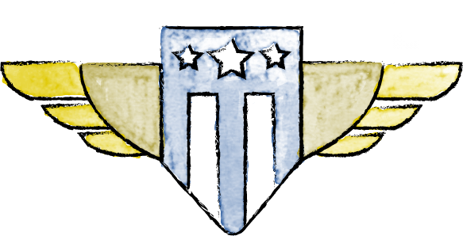
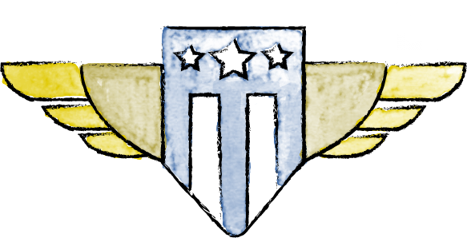

Our Story

Every day, millions of people interact with the government. We apply for Social Security and small business loans. We look for health insurance and financial aid.
Too often, outdated tools and systems make these interactions cumbersome and frustrating.
What if interacting with government services were as easy as ordering a book online? The challenges behind HealthCare.gov brought this question to the forefront, changing government’s approach to technology.

The U.S. Digital Service is a startup at the White House, founded by the President in August of 2014 to bring best practices in technology and design to government. We planned to hire ten people for three critical national priorities: modernizing immigration, Veterans’ benefits, and HealthCare.gov.
During the 2015 State of the Union address, we launched an online application to join the team. We worried if ten people would even apply. 1000 did.

We quickly went to work with a simple strategy:

Recruit top designers, engineers, product managers, and digital policy experts.

Pair these digital experts with our nation's leading civil servants.

Together, deploy these teams to untangle the most important government services

What was once one startup is now a networks of teams working across the Department of Homeland Security, Veterans Affairs, the Department of Defense, the Department of Education, the Department of State, and Heath and Human Services.
 

We’re proud of the products we’ve built. But we’re equally as proud of the team we’ve assembled.

151 people and growing
Over 50% women

Emoji, post-its, and sticker enthusiasts